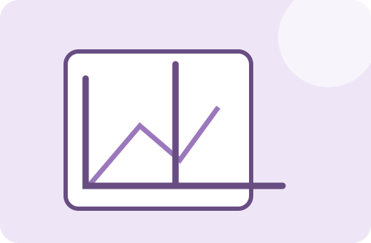

FACTORY ONE · IMAGE TOOL
이미지 자르기
사진이나 캡처 이미지에서 필요한 영역만 남겨 새 이미지로 저장합니다. 불필요한 여백 제거와 화면 일부 공유에 적합합니다.
영역 선택미리보기브라우저 처리

원본
이미지를 선택하세요.
잘라낸 결과
결과가 표시됩니다.
이미지 선택
사용방법
- 자를 이미지를 선택합니다.
- 필요한 영역 또는 좌표를 지정합니다.
- 잘린 결과를 미리 확인합니다.
- 결과 이미지를 저장합니다.
처리 기준과 주의사항
원본 이미지의 선택 영역 픽셀만 새 캔버스에 복사해 저장합니다. 자르기 자체는 선택 영역의 해상도를 높이지 않습니다.
중요한 원본 파일은 별도로 보관하고, 결과 파일은 저장 후 한 번 열어 내용과 품질을 확인하는 것을 권장합니다.
실제 사용 예시
스크린샷 전체에서 오류 메시지 부분만 잘라 문의용 이미지로 만들 수 있습니다.
자주 묻는 질문
원본 파일은 없어지나요?
아니요. 브라우저에서 새 결과 이미지를 만드는 방식입니다.
정확한 비율로 자를 수 있나요?
현재 제공되는 입력 또는 선택 방식의 범위 내에서 조절할 수 있습니다.